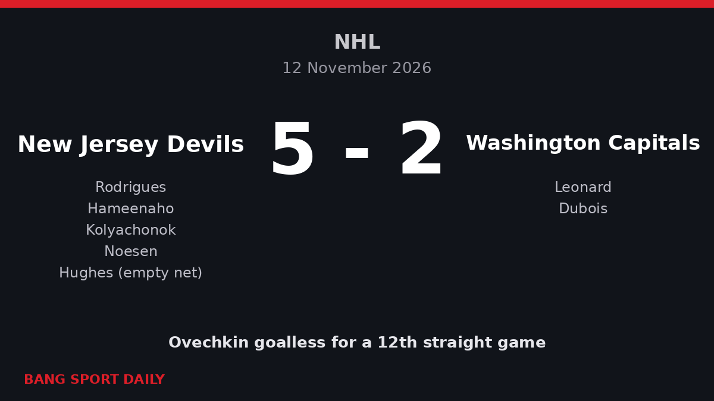

魔鬼队5比2击败首都人 奥韦奇金进球荒延长至12场
在已宣布的告别赛季中，这位NHL历史进球王17场比赛仅进1球，接近其职业生涯最长的进球荒纪录。

赛事经过
2026年11月12日星期四，新泽西魔鬼队在纽瓦克保德信中心以5比2击败华盛顿首都人队，亚历山大·奥韦奇金再次未能进球，全场正负值为-1。
首都人队凭借瑞恩·伦纳德的以多打少进球和皮埃尔-吕克·迪布瓦的进球以2比1领先。第二节，莱尼·哈梅纳霍为魔鬼队扳平比分；第三节，弗拉季斯拉夫·科利亚乔诺克在为球队出场的首秀中打进制胜球，斯特凡·诺森单刀破门，杰克·休斯射空门得手。门将康纳·赫勒布伊克完成26次扑救，自从温尼伯转会至新泽西以来六战全胜。
焦点所在
现年41岁的奥韦奇金在9月宣布本赛季将是他的最后一个赛季。据TSN报道，在本场比赛前，他16场比赛仅有1粒进球、4分，并已连续11场没有进球。本场过后，进球荒延长至12场，是他职业生涯第二长的进球荒，仅次于2023-24赛季初的14场。他场均13分47秒的上场时间也是生涯最低。
这段低迷之所以引人关注，是因为他的辉煌纪录：2025年4月，他超越韦恩·格雷茨基成为NHL历史进球王；上赛季他打进32球。在本赛季之前，他在21个NHL赛季中有20个赛季进球至少30个。
关键数据

- 比分： 魔鬼队 5比2 首都人队。
- 奥韦奇金本赛季： 17场1球4分。
- 生涯进球： 930个。
- 首都人： 10胜7负；魔鬼队： 14胜6负，主场七连胜。
下一步
主教练斯宾塞·卡伯里仍让奥韦奇金留在第一组以多打少阵容中，并对《华盛顿邮报》表示他"对他的表现感到满意"。奥韦奇金说："你只需要坚持下去。"